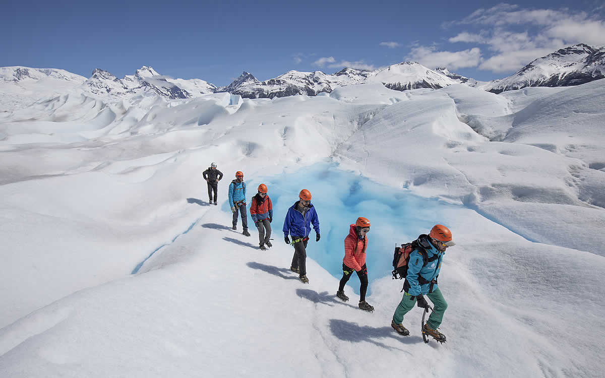
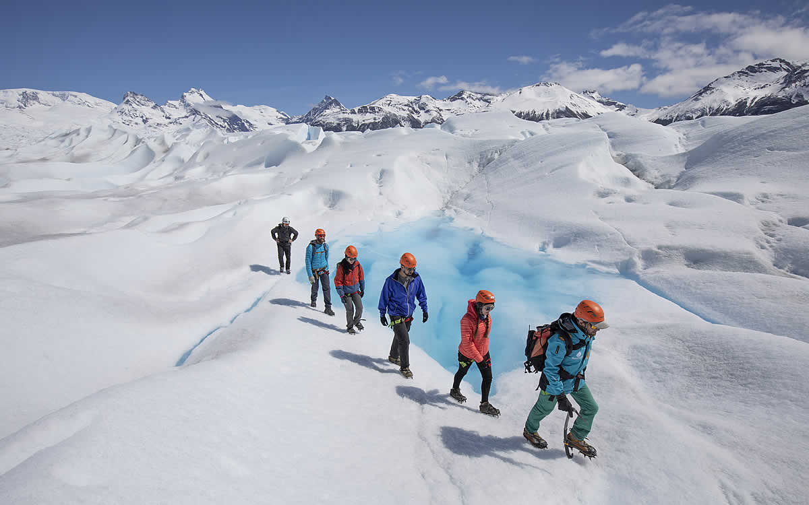

Glaciar Perito Moreno
Se encuentra ubicado en el extremo suroeste de la provincia de Santa Cruz, en el Parque Nacional Los Glaciares, a 80 km. de la ciudad de El Calafate. Único por su belleza e imponencia, esta enorme masa de hielo nace en el Campo de Hielo Sur y recorre 30km de largo hasta llegar y finalizar frente a la Península de Magallanes. Es frecuente ver caer desprendimientos de diversos tamaños, produciendo ruidos comparables al sonido de un trueno. Este fenómeno ha hecho que el Glaciar Perito Moreno sea conocido a nivel mundial.

Big Ice
Excursión que propone recorrer e internarse en la fantástica mole de hielo. Cruzando mediante embarcación el brazo Rico del lago Argentino se llega a la costa opuesta, donde se inicia una caminata de aproximación al glaciar hasta llegar a un espectacular mirador, puerta de entrada al hielo. Con grampones ajustados y los arneses puestos, se empieza a explorar el glaciar desde otra perspectiva.

 

Safari Naútico
La excursión comienza en el puerto “Bajo de las Sombras”, ubicado en la Ruta 11, Km 70.9, a una hora y media de El Calafate y a solo 7km del Glaciar. El pasajero deberá llegar por sus medios hasta el puerto y una vez allí, se embarcará para navegar por el Lago Rico, donde se podrá apreciar la impresionante pared de hielo del Glaciar Perito Moreno y los témpanos que provienen de él.
Esta navegación tiene una duración de una hora y brinda la posibilidad de observar desde nuestras confortables embarcaciones, y con una perspectiva totalmente diferente, las impresionantes paredes del Glaciar Perito Moreno y sus continuos y estruendosos derrumbes sobre las aguas del Lago Rico.
El Safari Náutico es una navegación apta para todas las edades y se puede realizar los 365 días del año. Esta excursión está orientada a personas que quieren contemplar la magia del hielo e inmortalizarla en la memoria, observando cada detalle de la pared de hielo y su entorno.